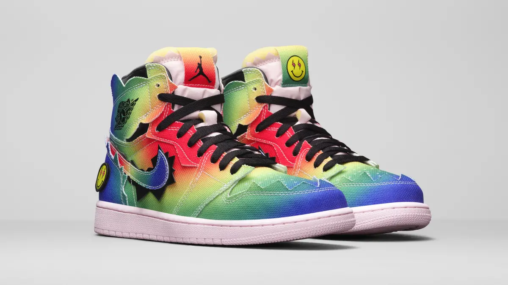

Air Jordan 1
J Balvin
Originalmente presentado durante una actuación de medio tiempo en el escenario más grande del fútbol americano, este AJ1 exclusivo usa una mezcla ecléctica de colores, texturas y gráficos para reimaginar el estilo clásico en la imagen del artista colombiano J. Balvin.
Las superposiciones toscamente talladas difuminan las líneas de diseño típicamente nítidas del diseño, mientras que un espectro de tonos de neón inyecta el look de una explosión de energía agresiva. Los gráficos personalizables (incluida la cara sonriente característica de Balvin) le dan un giro distintivo a la lengüeta, con imágenes similares que adornan la plantilla y el talón del calzado. Abróchate los cordones y marcha al ritmo de tu propio tambor en este coleccionable colorido y tan esperado
Para comprar da click aqui